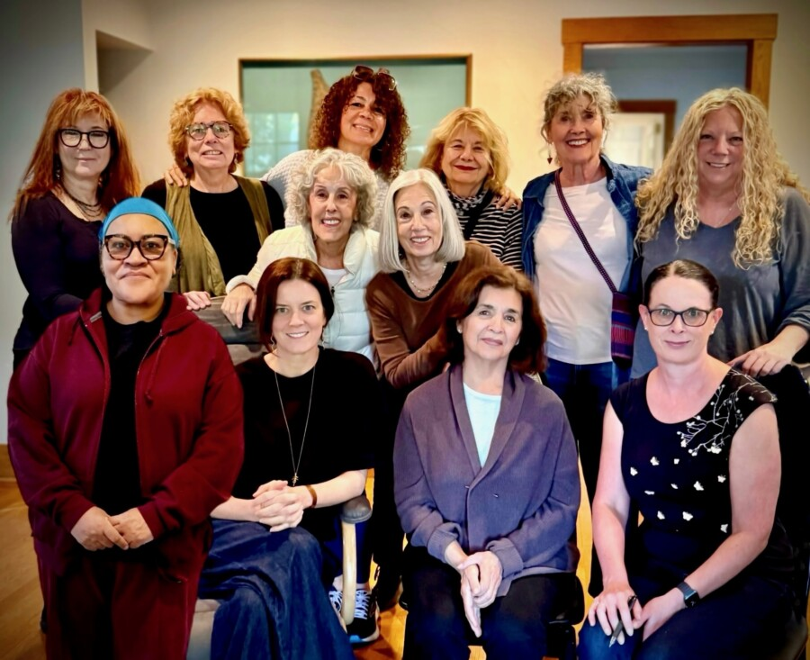

ARC Gallery Member Meet & Greet
ARC Gallery proudly presents a special Member Meet & Greet on Sunday, April 12, 12–2 PM—timed with EXPO Chicago as the international art world gathers in the city.
Experience The Given Distance, curated by Chicago gallerist William Lieberman, and connect directly with ARC’s artist-members as they share work exploring the space between inner experience and visual expression.
Please join us for lively discussion, refreshments and a unique opportunity to engage with the artists on their work, ideas, and collaborative experience as one of Chicago’s most enduring creative communities.